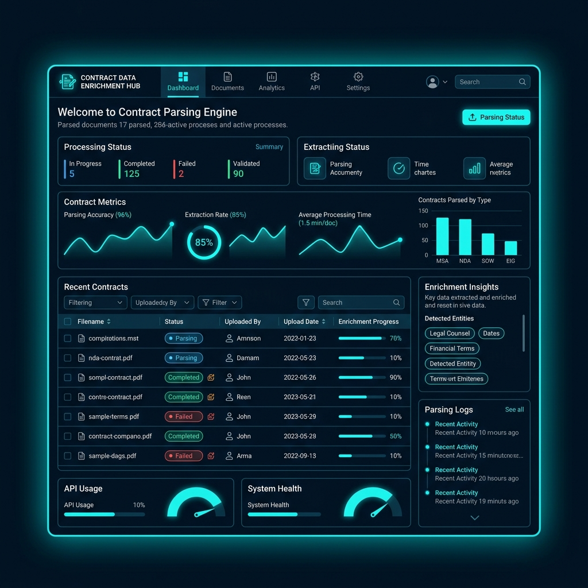
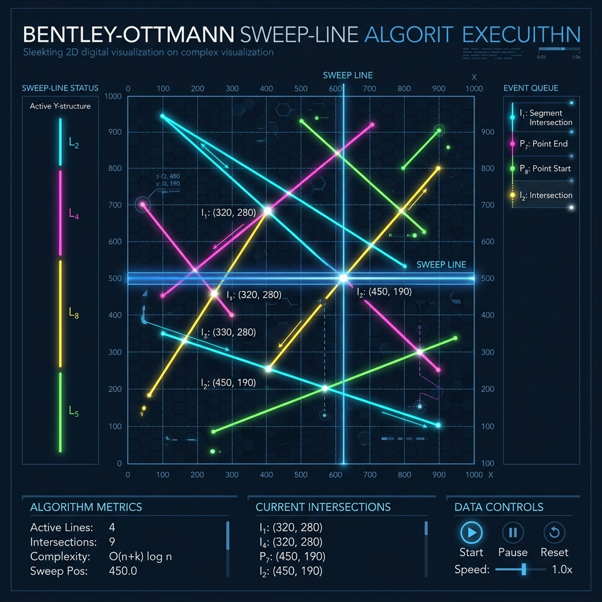
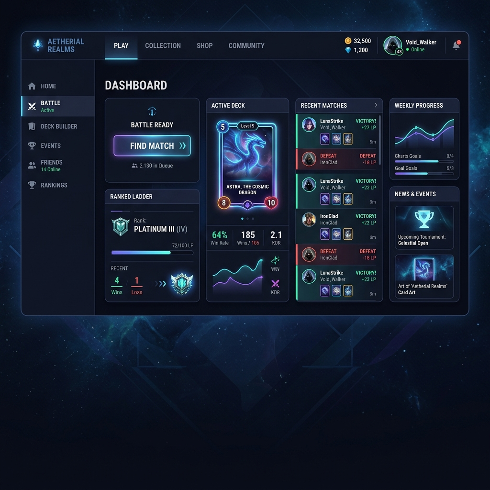
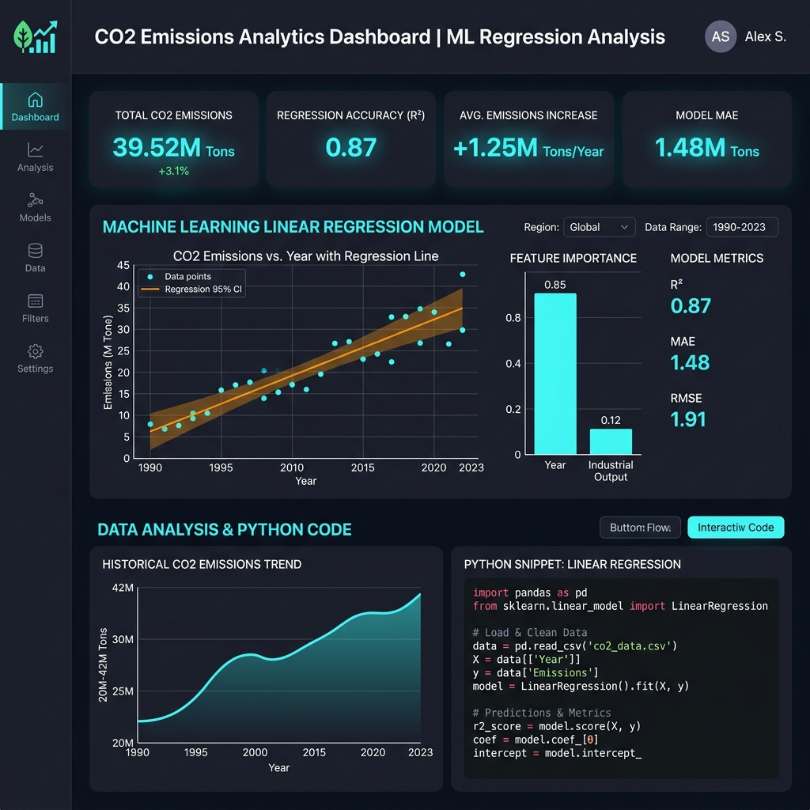
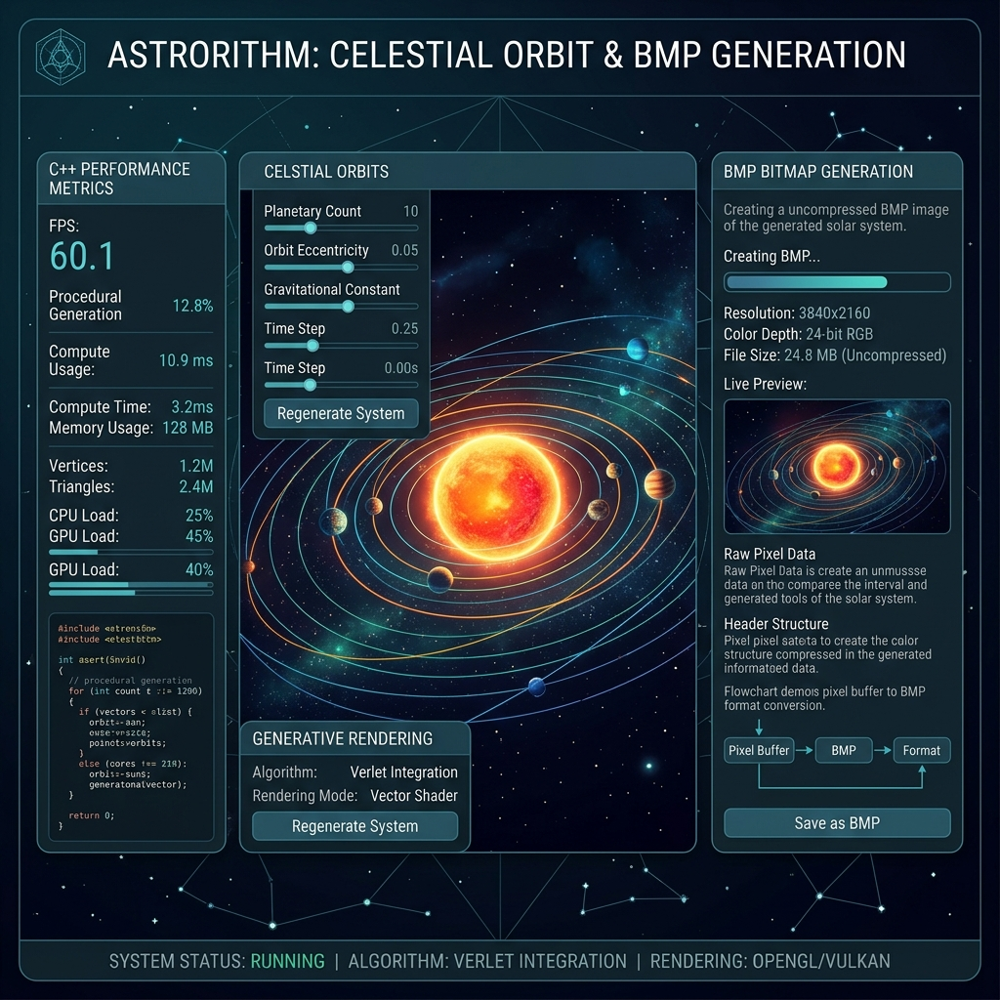
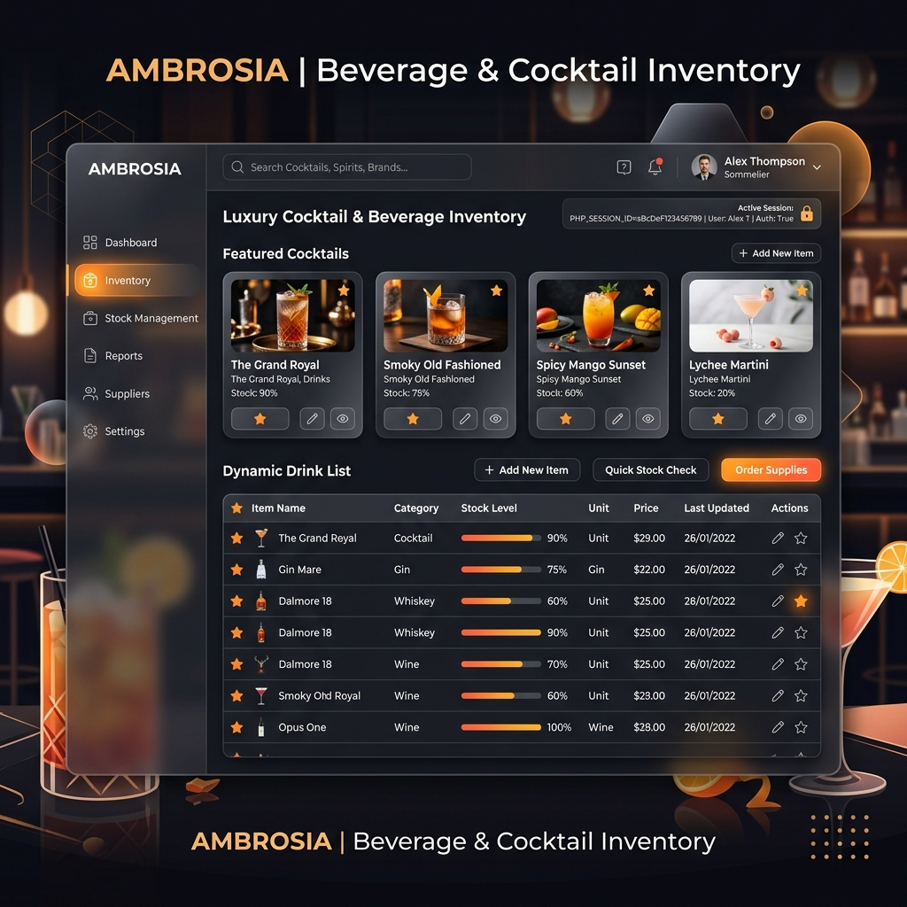

Featured Core Repositories
From adversarial AI engines and fraud detection models to computational geometry, enterprise systems, and full-stack web applications.

Enterprise Contract Parsing Engine
Highly modular data enrichment and parsing tool utilizing the Strategy Pattern to detect
and extract multi-language contract fields (e.g., concatenated BMW layouts). Integrated parallel
asynchronous ODBC/SQL lookups via Task.WhenAll to enrich payload structures, automatically
streaming cleanly structured reports via EPPlus Excel formatting APIs.

2D Bentley-Ottman Sweep-Line
Rigorous study and custom low-level development of the classic sweep-line algorithm in pure C to discover line segment intersections in a 2D plane. Leveraged advanced graph theory models, utilizing a robust Binary Search Tree (BST) for dynamic status tracing alongside a customized Doubly Linked List to manage priority event scheduling efficiently.

Multiplayer Network Uno Game
Conception and realization of a multiplayer Uno card game featuring native graphical desktop client interactions communicating synchronously with a centralized Java socket server. Integrated full backend state tracking tied persistently to a robust relational database layer ensuring uninterrupted game sessions and secure multithreading.

CO2 Emission ML Predictor
Supervised data science study building optimized Multiple Linear Regression pipelines inside Jupyter Notebooks to forecast precise vehicular emissions. Analyzed distinct commercial configuration inputs across France to map critical dependencies, optimizing target parameters for maximum predictive coefficient convergence.

Solar System BMP Art Generator
Low-level graphical generation application built using C++ leveraging algorithmic computational geometry formulas to procedurally map, scale, and render highly precise visualizations of celestial orbits directly into raw bit-level uncompressed BMP image file buffers from basic primitive structures.

Restaurant Inventory Platform
Web platform engineered in pure PHP and HTML/CSS implementing stateful backend workflows to curate specialized restaurant beverage inventories. Includes complete access session logic alongside secure user preference persistence tables handled without relying on client-side script execution.

Chess Engine — Negamax AI
Full-featured chess application with human-vs-AI mode powered by a negamax algorithm with alpha-beta pruning. Built in Python with Pygame, featuring castling, en passant, pawn promotion, adjustable search depth, move highlighting, undo, and sound effects — a complete adversarial game AI implementation.

Credit Card Fraud Classifier
Supervised ML pipeline classifying financial transactions as fraudulent or legitimate with optimal predictive accuracy. Engineered with Python and Jupyter Notebooks — encompassing data generation, feature analysis, model training, and evaluation targeting precision-recall balance across class-imbalanced real-world transaction datasets.

Movie Tracking Application
Cross-platform movie management app built with Angular and Ionic, engineered as a feature-rich bookmarking and collection tracker. TypeScript throughout for strong type safety, responsive SCSS styling, and a clean mobile-first UX architecture targeting both web and native deployment.